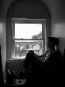
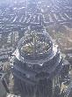
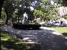
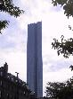
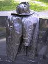
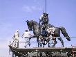
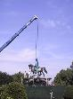
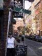
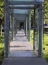

Richard in the window

View from the Skywalk
Higher than a skyscraper
Commonwealth Avenue
John Hancock building
The firefighter monument
George Washington gets a raise
George and crane
State building
Jane at Hull Street
Holocaust memorial
I woke up early - breakfast wasn't till 9:30 - but spent some time just relaxing before starting the day proper. We went down to the breakfast nook and had a really lovely breakfast and a nice, informative chat with Reinhold.
It was another hot day and so we headed off to explore. Our first stop was the Prudential centre and a visit to the Skywalk - a viewing gallery over Boston. There are some great views and it is getting traditional that we head for the highest possible vantage point.
We headed along Commonwealth Ave, a lovely tree lined road with a series of gardens before entering the Public Garden. There was a crane and a group of workmen all working on moving the George Washington off the granite stand. We watched progress for quite some time before they decided it was lunchtime. We headed off into Boston Common and picked up the Freedom trail.
The Freedom trail is a 2.5 mile walk linking 16 of the historically important sites. It's really easy to follow as the route is marked by red bricks/red paint. It was a good walk with some interesting sites. We took a short shopping break near the Faneuil Hall to visit Abercrombie and Fitch, and then stopped for some chowder in a bread bowl at Quincy Market. We then headed on and completed the trail although by the time we'd got over the river to Charlestown we were both pretty weary.
We decided to head back to the Encore but decided to stop of at the Prudential shopping mall first - resulting in me buying a new skirt. Then back to the room and time for a much needed shower before heading off to Giacomos - an italian that was recommended by a shopkeeper we'd chatted to earlier. Our food was pretty good, but the service was very harsh and so this spoilt it for us a bit.
So, finally back to the room to relax a little before bedtime.
(11 images.)| 
Richard in the window |
View from the Skywalk | 
Higher than a skyscraper | 
Commonwealth Avenue |
| 
John Hancock building | 
The firefighter monument | 
George Washington gets a raise | 
George and crane |
|
State building | 
Jane at Hull Street | 
Holocaust memorial |